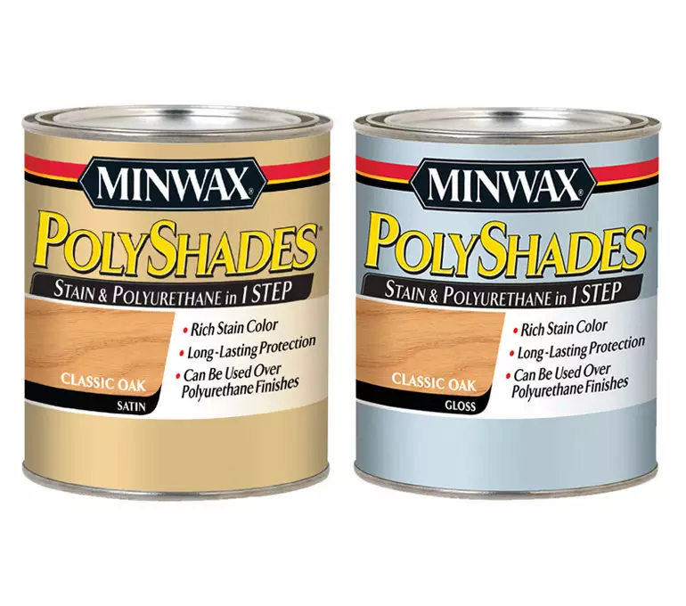

Minwax®

Overview
Minwax® PolyShades® enhances wood grain by combining beautiful rich stain color and long-lasting polyurethane protection in one easy step.
- It can also be used over polyurethane finishes, so you can change the color of your finished wood, without removing the existing finish.
- To learn how PolyShades® can help you easily change the color of your stained or polyurethane finished wood, view the PolyShades® Color Transformation Guide.
- *Minwax® PolyShades® is also available in an aerosol can.
Product Details
| Sheens: | satin and gloss |
| Application Tool: | high-quality natural bristle brush |
| Location: | interior wood surfaces |
| Recoat: | after 6 hours |
| Dry Time: | 6 hours |
| Cleanup: | mineral spirits |
| Coverage: | 120-150 sq. ft. per quart |
| Coats: | 2 coats are recommended. To deepen the color, apply a third coat. |
| Recommended Uses: | furniture, woodwork, doors, cabinets, accessories |
Directions Instrucciones en Español
WARNING! Removal of old paint by sanding, scraping or other means may generate dust or fumes that contain lead. Exposure to lead dust or fumes may cause brain damage or other adverse health effects, especially in children or pregnant women. Controlling exposure to lead or other hazardous substances requires the use of proper protective equipment such as a properly fitted respirator (NIOSH approved) and proper containment and cleanup. For more information, call the National Lead Information Center at 1-800-424-LEAD (in US) or contact your local health authority.
Surface Preparation:
NOT FOR USE ON FLOORS
For Stripped, Unstained or Raw Wood:
- Before starting, surface must be dry, clean and free of dirt, grease and glue.
- Sand the wood in the direction of the grain using fine-grade sandpaper (#220) until smooth.
- Remove all sanding dust.
- To help ensure uniform acceptance of stain color and beautiful results, pretreat new or raw wood with oil-based Minwax® Pre-Stain Wood Conditioner, following label directions.
For Previously Stained Wood That Is Not Being Stripped:
- Before starting, surface must be dry, clean and free of dirt, grease and glue.
- Lightly sand the wood to ensure adhesion. Remove all sanding dust.
Product Preparation and Color Testing:
- Stir Minwax® PolyShades® thoroughly before and occasionally during use. Do not thin.
- Always test stain on a scrap piece or hidden area of wood to verify desired color.
Application:
- Using a natural bristle brush, dip approximately an inch into the can, gently tapping it against the inside to remove any excess. Apply a very THIN, even coat following the direction of the grain. Make sure to maintain a "wet" edge.
- To minimize the brush marks and bubbles after staining, tip off the surface by holding the brush at a 45 degree angle and lightly run the bristles over the entire length of the wood.
- Let the first coat dry for 6 hours or more. Dry time may be extended due to high humidity, low temperatures, and inadequate ventilation or if the coat is applied too thick.
- Rub the surface lightly with fine steel wool (grade 000 or finer). Remove all dust. Brush on a second thin coat following directions above. To deepen the color, apply a third coat.
NOTE: For additional protection, without adding color, add a coat of Minwax® Fast-Drying Polyurethane or Minwax® Wipe-On Poly. Please refer to the back label of the container for application instructions.
COVERAGE: Approximately 120-150 square feet per quart.
CLEANUP: Use mineral spirits following manufacturer’s safety recommendations.
Colors
The colors shown are for reference purposes only. They have been reproduced using digital production techniques. Always test stain on a hidden area of the wood to verify desired color.
To learn how PolyShades® can help you easily change the color of your stained or polyurethane finished wood, view the PolyShades® Color Transformation Guide.
Frequently Asked Questions
What is the advantage of PolyShades®?
PolyShades® combines stain for rich beautiful color with polyurethane for tough protection in one product. It is an ideal choice for those who want to save the time involved in staining with one product and protecting with another.
Should Minwax® Pre-Stain Wood Conditioner be used as a pretreatment prior to PolyShades®?
Yes, if the wood being stained is soft or porous. Soft or porous woods, such as pine or aspen, tend to absorb stain unevenly. Before using PolyShades® on soft or porous woods, Minwax® Pre-Stain Wood Conditioner should be applied to ensure even stain penetration.
Can PolyShades® be applied over an existing finish?
Yes, as long as the previous finish is not lacquer or shellac. Be sure to test the selected color on a hidden spot to see how it will look over the original finish. To prepare the surface, make sure that the finish is clean and has had all wax and polish removed. Then lightly sand with #180 or #220 sandpaper. The surface is then ready to be coated with PolyShades®.
Can Minwax® Fast-Drying Polyurethane or Wipe-On Poly be applied over PolyShades®?
Yes. Since PolyShades® contains polyurethane, additional protection, without added color, can be provided with a clear coat of Minwax® Fast-Drying Polyurethane or Wipe-On Poly over the last coat of PolyShades®.
Can PolyShades® be used on floors?
PolyShades® is not recommended for use on floors. Instead, stain with Minwax® Wood Finish™ and topcoat with Minwax® Super Fast-Drying Polyurethane for Floors or Minwax® Fast-Drying Polyurethane.
Material Safety Data Sheet
- AMERICAN CHESTNUT Gloss
- AMERICAN CHESTNUT Satin
- ANTIQUE WALNUT Gloss
- ANTIQUE WALNUT Satin
- BOMBAY MAHOGANY Gloss
- BOMBAY MAHOGANY Satin
- CLASSIC BLACK Gloss
- CLASSIC BLACK Satin
- CLASSIC OAK Gloss
- CLASSIC OAK Satin
- HONEY PINE Gloss
- HONEY PINE Satin
- MISSION OAK Gloss
- MISSION OAK Satin
- NATURAL CHERRY Gloss
- NATURAL CHERRY Satin
- OLDE MAPLE Gloss
- OLDE MAPLE Satin
- PECAN Gloss
- PECAN Satin
- ROYAL WALNUT Gloss
- ROYAL WALNUT Satin
- TUDOR Gloss
- TUDOR Satin